<!DOCTYPE html>
<html lang="zh-hant-tw">
<head>
    <meta charset="UTF-8">
    <meta name="viewport" content="width=device-width, initial-scale=1.0">
    <title>都會甜點</title>
    <!-- awesome CDN -->
    <link rel="stylesheet" href="https://cdnjs.cloudflare.com/ajax/libs/font-awesome/7.0.1/css/all.min.css" integrity="sha512-2SwdPD6INVrV/lHTZbO2nodKhrnDdJK9/kg2XD1r9uGqPo1cUbujc+IYdlYdEErWNu69gVcYgdxlmVmzTWnetw==" crossorigin="anonymous" referrerpolicy="no-referrer" />
    <link rel="stylesheet" href="css/style.css">
</head>
</html>
<body>
   <header>
    <h1 id="logo"><a href="#" title="都會甜點">都會甜點</a></h1>
    <nav>
        <div class="bar"></div>
        <div class="bar"></div>
        <div class="bar"></div>
    </nav>
    <menu class="none">
        <ul>
            <li><a href="#about" title="關於都會甜點">關於都會甜點</a></li>
            <li><a href="#service" title="都會甜點方案">都會甜點方案</a></li>
            <li><a href="#hot" title="精選都會甜點">精選都會甜點區</a></li>
            <li><a href="#video" title="都會甜點影音">都會甜點影音</a></li>
            <li><a href="#contact" title="聯絡都會甜點">聯絡都會甜點</a></li>
        </ul>    
    </menu>
   </header>
    <div id="slide">
        <div class="box">
            <div class="pic"></div>
            <div class="pic"></div>
            <div class="pic"></div>
            <div class="pic"></div>
            <div class="pic"></div>
        </div>
        <div class="theme">
            <div class="item">
                <h2>都會甜點</h2>
                <p>甜點不只美味，更是一份精緻生活的藝術與優雅享受。</p>
                <a href="#" class="btn-theme">瞭解更多...</a>
            </div>
        </div>
    </div>
    <main id="about">
        <div class="flex">
            <div class="grid-10 grid-md-5 grid-lg-6">
                <h2><i class="fa-solid fa-shop fa-2x"></i>關於都會甜點</h2>
                <p>
                    在都會的忙碌生活中，我們希望以蛋糕與手作甜點帶來片刻的溫暖與愉悅。每份甜點都經過精心製作，選用天然食材，注重口感與細節，讓每位顧客在品嚐的瞬間，感受甜蜜、舒心的精緻生活體驗。
                </p>
            </div>
            <div class="grid-10 grid-md-5 grid-lg-6">
                <p>
                    都會甜點專注蛋糕與手作甜點的精緻工藝，嚴選天然食材，兼顧美味與視覺享受。每一份甜點都是都市生活的藝術，讓顧客在忙碌中享受片刻的甜蜜與優雅。
                </p>
                <p>
                    都會甜點嚴選天然食材，專注蛋糕與手作甜點的品質與工藝。品牌理念是將甜點化作都市生活的精緻享受，讓每位顧客在忙碌中也能品味幸福與甜蜜。
                </p>
            </div>
        </div>
        <div class="flex">
            <div class="grid-10 grid-md-3 grid-lg-4">
                <i class="fa-solid fa-hand-holding-heart fa-4x"></i>
                <h3>關於品牌故事</h3>
                <p>
                    每份蛋糕與手作甜點，都是我們對精緻生活與甜蜜時光的承諾。
                </p>
            </div>
            <div class="grid-10 grid-md-3 grid-lg-4">
                <i class="fa-solid fa-seedling fa-4x"></i>
                <h3>關於產品理念</h3>
                <p>
                   將甜點化作生活藝術，蛋糕與手作甜點承載都市的精緻與優雅。
                </p>
            </div>
            <div class="grid-10 grid-md-3 grid-lg-4">
                <i class="fa-solid fa-magnifying-glass-location fa-4x"></i>
                <h3>關於店面</h3>
                <p>
                    溫暖明亮的店面設計，結合精緻甜點與舒適氛圍，打造都會甜點新體驗。
                </p>
            </div>
        </div>
    </main>
    <main id="service">
        <div class="flex">
            <div class="banner grid-12">
                <h2>都會甜點方案</h2>
                <p>
                    蛋糕、手作點心與飲品，加上客製化訂製、手作體驗及節慶限定甜點，都會甜點滿足每位甜點控的都市甜蜜生活。
                </p>
            </div>
            <div class="grid-6 grid-md-4 grid-lg-2">
                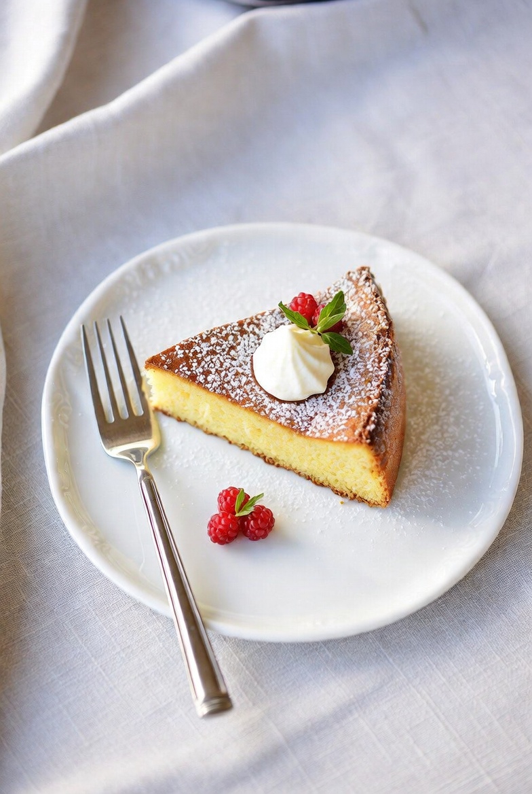
                <h3>甜點餐點類</h3>
            </div>
            <div class="grid-6 grid-md-4 grid-lg-2">
                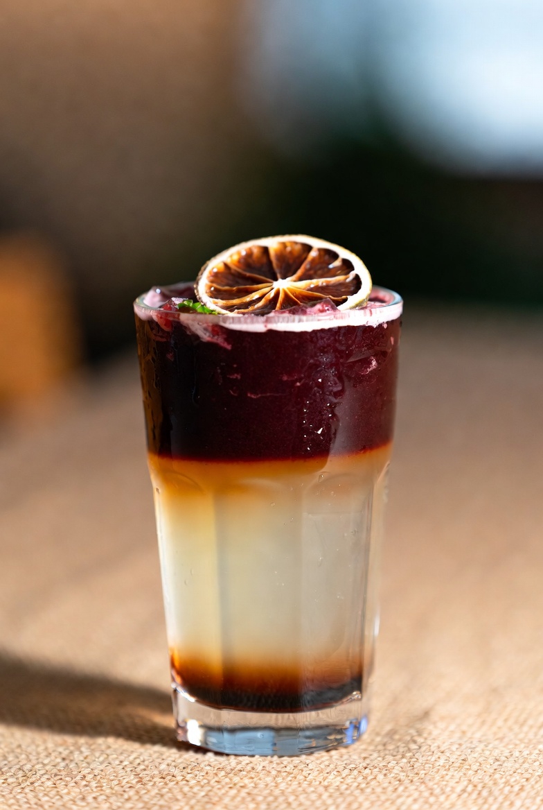
                <h3>飲品搭配</h3>
            </div>
            <div class="grid-6 grid-md-4 grid-lg-2">
                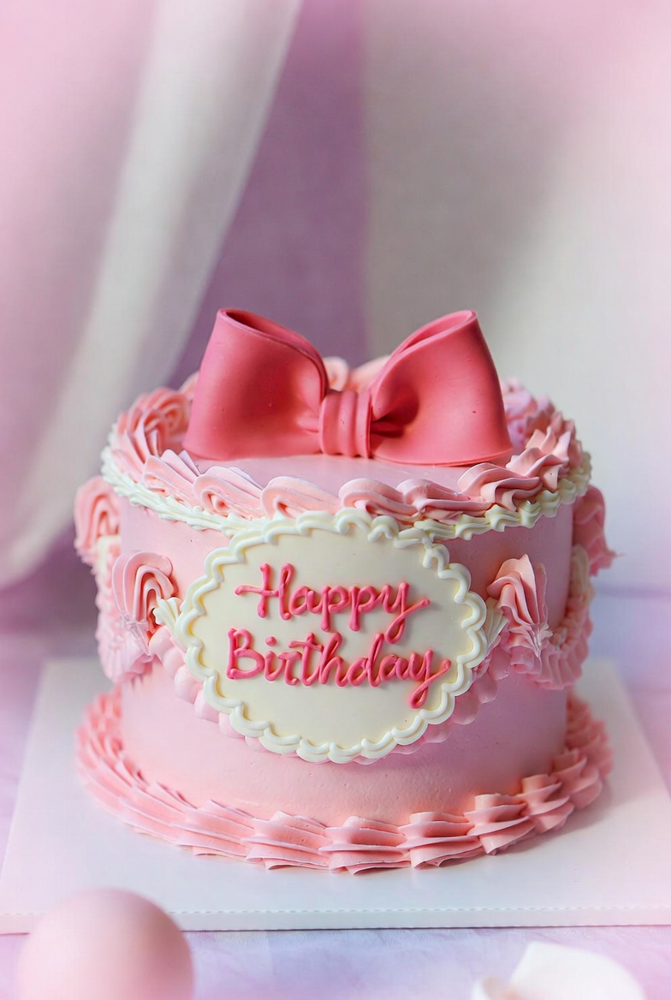
                <h3>訂製服務</h3>
            </div>
            <div class="grid-6 grid-md-4 grid-lg-2">
                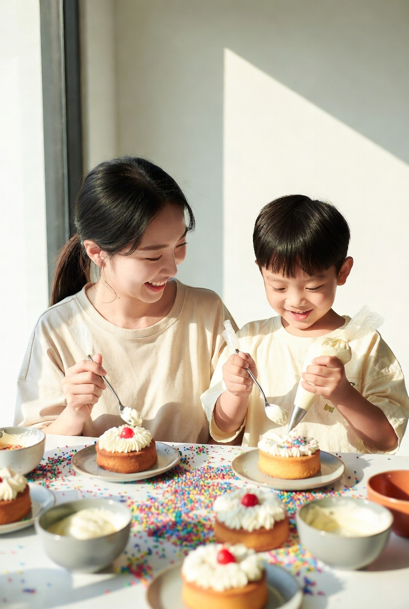
                <h3>體驗活動與課程</h3>
            </div>
            <div class="grid-6 grid-md-4 grid-lg-2">
                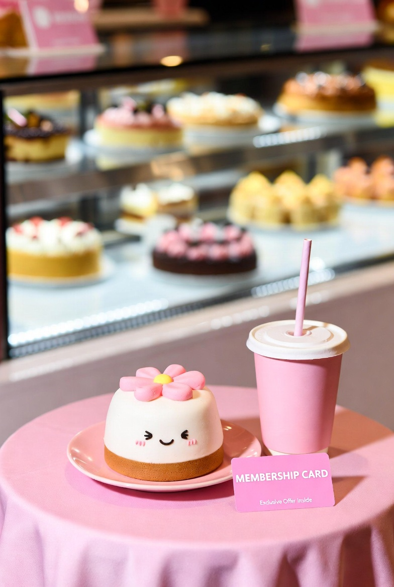
                <h3>會員制度</h3>
            </div>
            <div class="grid-6 grid-md-4 grid-lg-2">
                
                <h3>聯名或品牌合作</h3>
            </div>
        </div>
    </main>
    <main id="hot">
        <div class="flex">
            <div class="banner grid-10 grid-md-12 grid-lg-12">
                <h2>精選商品區</h2>
                <p>精選都會甜點區，帶來當季流行的手工甜品，從精美的馬卡龍到創意蛋糕，每一款都用心設計，融合現代風味與高雅美學，讓你品味甜蜜的都市生活。</p>
            </div>
            <a href="#" class="grid-10 grid-md-4 grid-lg-3">
                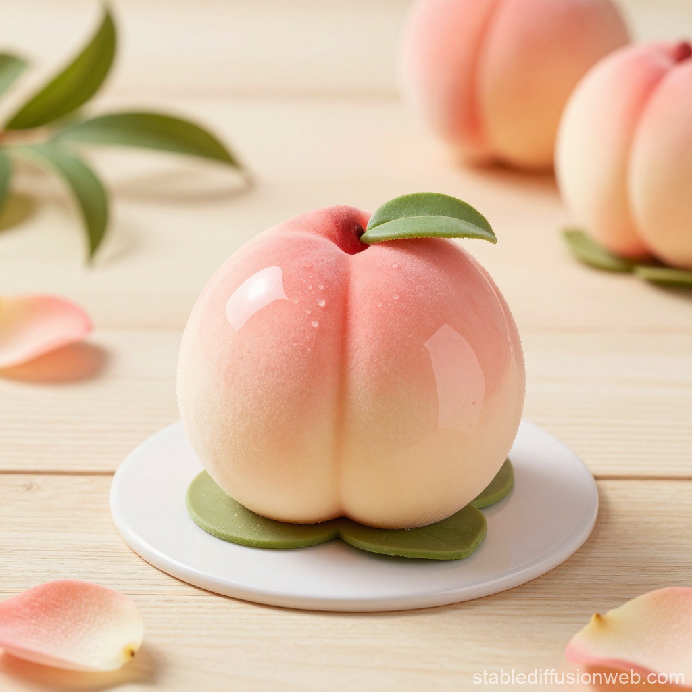
                <h3>鏡面蛋糕</h3>
                <p>
                   光滑的鏡面效果非常吸引人，表面顯得如同水晶般透亮，可以使用不同顏色的鏡面，創造出各種視覺效果。
                </p>
            </a>
            <a href="#" class="grid-10 grid-md-4 grid-lg-3">
                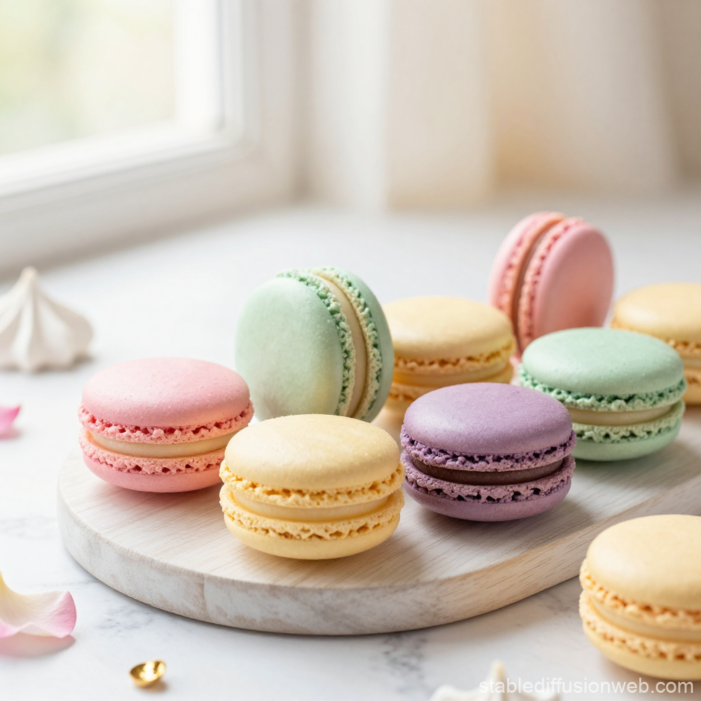
                <h3>法式馬卡龍</h3>
                <p>
                    這是非常時尚的甜點，色彩鮮豔、口感酥脆，可以搭配不同的內餡口味，如莓果、抹茶、巧克力等。
                </p>
            </a>
            <a href="#" class="grid-10 grid-md-4 grid-lg-3">
                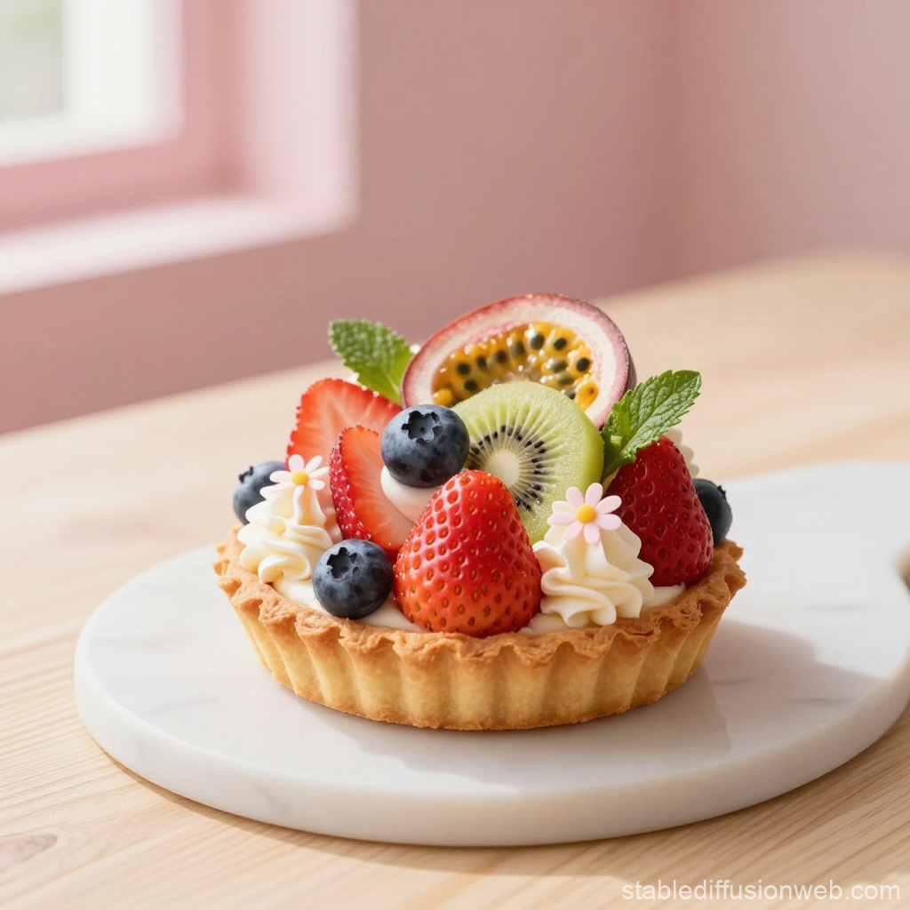
                <h3>現代風格水果塔</h3>
                <p>
                    精緻的水果塔，底層可以是酥脆的餅乾或塔皮，填入滑順的卡士達醬，再放上新鮮的季節性水果。搭配精美的裝飾，適合都市時尚的氛圍。
                </p>
            </a>
        </div>
    </main>
    <div id="video" class="flex">
        <div class="grid-12 grid-md-6 flex">
            <div class="box">
                <h2>影音專區</h2>
                <p>甜點影音專區，精緻蛋糕與創意甜品層層呈現，享受都會甜點的時尚與美味雙重盛宴。</p>
                <a href="#" class="btn-theme">連結到Youtube</a>
            </div>    
        </div>
    </div>
    <main id="link">
        <div class="flex">
            <div class="banner grid-12">
                <h2>都會甜點相關連結</h2>
                <p>探索都會甜點精緻法式甜品、鏡面蛋糕與水果塔，立即預訂專屬訂製服務。</p>
            </div>
            <div class="grid-10 gird-sm-8 grid-md-4 item">
                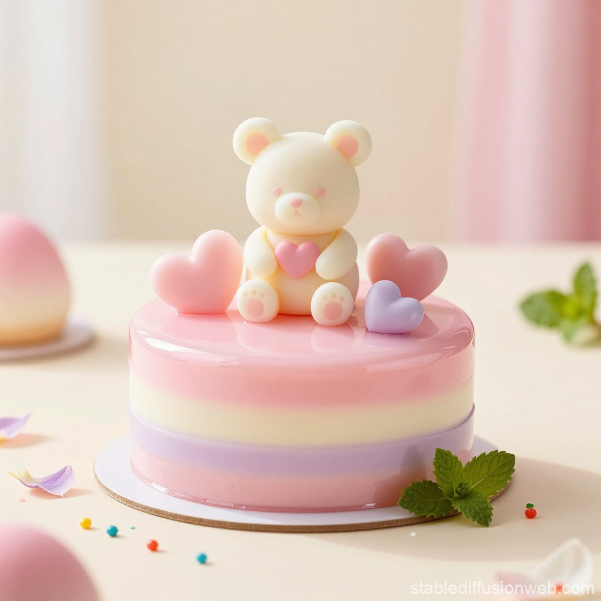
                <div class="box">
                    <h3>鏡面蛋糕影片</h3>
                    <p>精緻鏡面蛋糕倒釉均勻光滑，手工巧思展現高級甜點質感，每口都是幸福滋味。</p>
                    <a href="#" class="btn-theme">前往Youtube</a>
                </div>
            </div>
            <div class="grid-10 gird-sm-8 grid-md-4 item">
                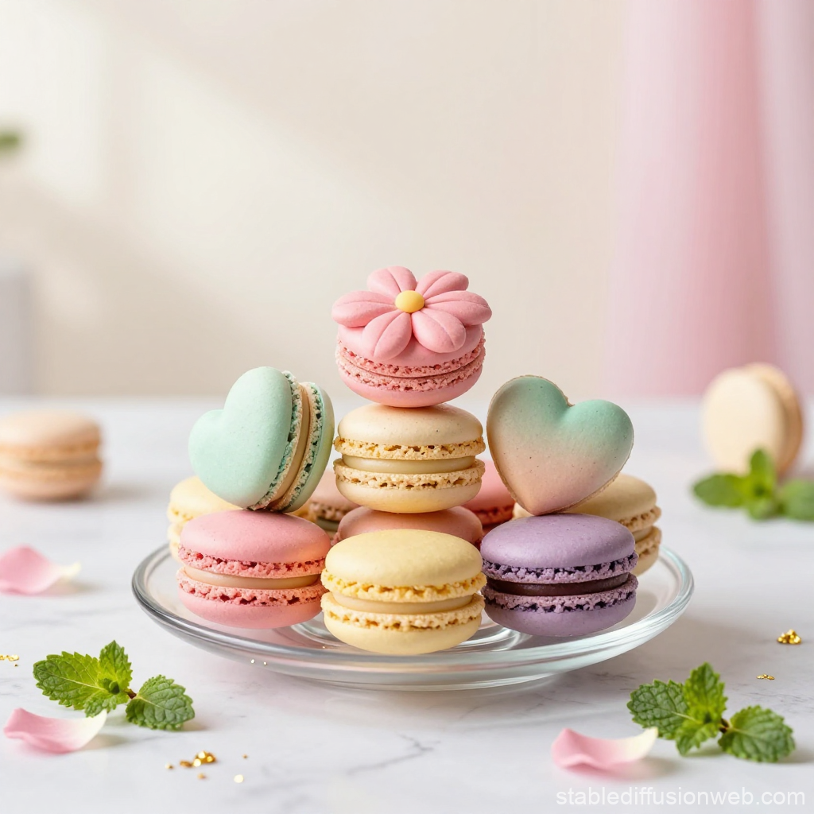
                <div class="box">
                    <h3>法式馬卡龍影片</h3>
                    <p>法式馬卡龍酥脆香甜，外殼光滑細緻，內餡濃郁柔滑，呈現手工甜點的精緻工藝。</p>
                    <a href="#" class="btn-line">前往Youtube</a>
                </div>
            </div>
            <div class="grid-10 gird-sm-8 grid-md-4 item">
                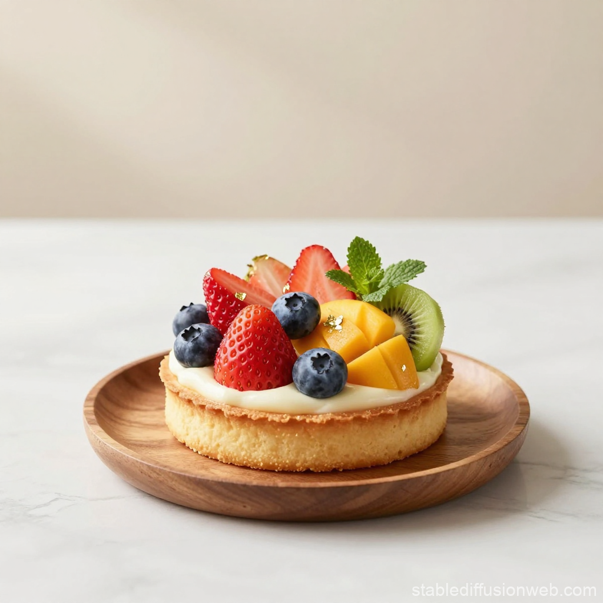
                <div class="box">
                    <h3>現代風格水果塔</h3>
                    <p>粉嫩水果點綴香甜奶油，酥脆塔皮每一口都是幸福，現代風水果塔，夢幻呈現。</p>
                    <a href="#" class="btn-theme">前往Youtube</a>
                </div>
            </div>
        </div>
    </main>
    <article id="contact">
        <div class="flex">
            <div class="grid-11 grid-sm-10 grid-md-6 grid-lg-3 item">
                <h3>都市甜點簡介</h3>
                <p>都會甜點將甜蜜變成潮流，每一口都充滿驚喜與創意，讓甜點不只是美食，更是生活的趣味。</p>
                <p>活潑又有趣的風格，讓每一次品嚐都像小小的冒險，甜點成為生活中的亮點與愉悅來源。</p>
            </div>
            <div class="grid-11 grid-sm-10 grid-md-6 grid-lg-3 item">
                <h3>聯絡都市甜點</h3>
                <table>
                    <tr>
                        <td><i class="fa-solid fa-location-dot"></i></td>
                        <td>220新北市板橋區府中路88號 1 樓</td>
                    </tr>
                    <tr>
                       <!-- colspan="2" 在表格的單元格中放置一條橫線，並讓該單元格跨越兩欄。 -->
                        <td colspan="2"><hr></td>
                    </tr>
                    <tr>
                        <td><i class="fa-solid fa-phone"></i></td>
                        <td>
                            <a href="tel:+886229681766">(02)2968-1766</a>
                        </td>
                    </tr>
                    <tr>
                        <td colspan="2"><hr></td>
                    </tr>
                    <tr>
                        <td><i class="fa-solid fa-headset"></i></td>
                        <td>0800-580-588</td>
                    </tr>
                    <tr>
                        <td colspan="2"><hr></td>
                    </tr>
                    <tr>
                        <td><i class="fa-regular fa-envelope"></i></td>
                        <td>sweet@gmail.com</td>
                    </tr>
                </table>
            </div>
            <div class="grid-11 grid-sm-10 grid-md-6 grid-lg-3 item">
                <h3>相關連結</h3>
                <a href="#"><i class="fa-brands fa-square-facebook"></i>Facebook</a>
                <hr>
                <a href="#"><i class="fa-brands fa-instagram"></i>Instagram</a>
                <hr>
                <a href="#"><i class="fa-brands fa-threads"></i>Threads</a>
                <hr>
                <a href="#"><i class="fa-brands fa-twitter"></i>Twitter</a>
                <hr>
                <a href="#"><i class="fa-brands fa-tiktok"></i>Tiktok</a>
                <hr>
                <a href="#"><i class="fa-brands fa-amazon"></i>Amazon</a>
                <hr>
                <a href="#"><i class="fa-brands fa-figma"></i>Figma</a>
                <hr>
                <a href="#"><i class="fa-brands fa-line"></i>LINE</a>
            </div>
            <div class="grid-11 grid-sm-10 grid-md-6 grid-lg-3 item">
                <h3>其他連結</h3>
                <h4><a href="#">Youtube連結</a></h4>
                <p>
                    都會甜點，讓每一口都是幸福！在 YouTube 分享手作甜點與甜蜜時刻，跟我們一起享受生活裡的小確幸吧！
                </p>
                <hr>
                <h4><a href="#">電子書連結</a></h4>
                <p>
                    從夢幻甜點到精緻小點，《都會甜點電子書》帶你探索甜蜜藝術世界，每一頁都是甜蜜與創意的奇蹟！
                </p>
            </div>
        </div>
    </article>
    <footer>
        <p>Copyright &copy;<span id="year"></span> Janice. All rights reserved.</p>
    </footer>

    <!-- goTop 放在 body 裡適當位置，一般放在頁面最後 -->
    <button id="goTop" title="回到頂部">↑</button>
</body>
</html>
<script src="js/def.js"></script>

<script>
    // goTop
    // 取得按鈕
const goTopBtn = document.getElementById("goTop");

// 當頁面滾動超過 100px 時顯示按鈕
window.onscroll = function() {
    if (document.body.scrollTop > 100 || document.documentElement.scrollTop > 100) {
        goTopBtn.style.display = "block";
    } else {
        goTopBtn.style.display = "none";
    }
};

// 點擊按鈕時平滑滾動回頂部
goTopBtn.addEventListener("click", function() {
    window.scrollTo({
        top: 0,
        behavior: "smooth"  // 平滑滾動
    });
});
</script>